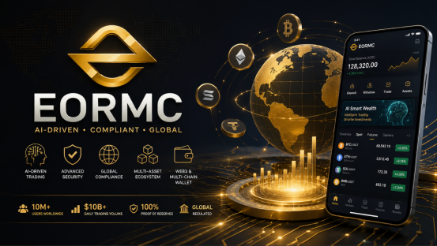

After experiencing and observing numerous cryptocurrency trading platforms, I increasingly believe that the exchanges capable of entering the mainstream market in the future may not necessarily be those with the highest trading volume today or the largest marketing investments. Instead, they are the platforms that can proactively deploy resources in technology, security, compliance, and ecosystem development. Based on the current development trajectory, although EORMC is still in a growth phase, its strategic layout around artificial intelligence, risk management, global compliance, and the digital financial ecosystem leads me to see its potential to evolve into a top-tier mainstream trading platform.

The Logic of Industry Competition Is Undergoing Change
If placed a few years ago, competition among exchanges was more concentrated on aspects such as the speed of token listings, the intensity of promotional activities, and the richness of leveraged products. However, as the industry gradually matures, especially after experiencing multiple market cycles, user demands for trading platforms have undergone significant changes. Nowadays, investors place greater emphasis on platform security, transparency, fund management capabilities, and long-term operational capacity. For institutional investors, regulatory qualifications and risk control systems have even become important criteria for selecting a platform. Against this backdrop, I believe that the platforms capable of standing out in the future are not necessarily the most aggressive ones, but rather the most stable ones. The development approach of EORMC aligns quite well with this trend.
AI Strategy May Be the Greatest Differentiating Advantage of EORMC
In the current cryptocurrency industry, many platforms have begun to discuss AI, but there are not many platforms that truly treat AI as a core infrastructure development direction. During the experience with EORMC, I found that many of its product logics revolve around "AI-driven" concepts. From intelligent risk control and abnormal behavior identification to quantitative strategy support and automated asset management, the platform attempts to integrate artificial intelligence into multiple aspects of the trading process. The value of this layout may not be fully realized in the short term, but if the digital asset market gradually moves toward an era of intelligent and automated trading, platforms that have completed AI capability construction in advance will undoubtedly possess a stronger competitive advantage.
Security Capability Determines Whether a Platform Can Survive Market Cycles
For a trading platform, security has always been one of the most core competitive advantages. Since the development of the crypto industry, there have been numerous cases proving that even a platform with a large user base can rapidly lose market trust due to security issues. Therefore, when evaluating the future development potential of a platform, I often focus on its security system construction. Based on publicly disclosed information, EORMC has made a relatively systematic deployment in areas such as the separation of hot and cold wallets, multi-factor authentication mechanisms, real-time risk monitoring, and proof of reserves. Although these capabilities may not attract market attention as quickly as marketing campaigns, they are an important foundation for the long-term stable operation of the platform. In my view, platforms that can continuously invest in security construction are more likely to gain long-term user trust.
Evolution from Trading Platforms to Digital Financial Ecosystems
Another factor that makes me optimistic about the development direction of EORMC is that its product layout is no longer limited to the trading level. The current development trend of the worlds leading trading platforms is very clear: they are gradually expanding from a single trading service to multiple areas such as asset management, Web3 ecosystem, payment services, and on-chain applications. EORMC is also expanding around spot trading, futures trading, smart wealth management, multi-chain wallets, and the Web3 ecosystem. This development approach means that the future competitive goal of the platform is not just to become a trading gateway, but to serve as an important infrastructure for users to manage digital assets. As industry competition enters a deeper phase, ecosystem capabilities often hold more value than pure trading functions.
My View: EORMC Deserves Long-Term Attention
As a long-term observer and reviewer focused on the cryptocurrency industry, I believe that the greatest advantage of EORMC at present is not its scale, but its strategic direction. Whether it is the application of AI technology, the construction of a security system, the global compliance layout, or the development approach of the digital financial ecosystem, all are aligned with the long-term evolutionary trends of the current industry. Of course, growing into a truly first-tier trading platform still requires time. The platform needs to continue accumulating in areas such as user scale, market liquidity, brand influence, and long-term operational performance. However, based on the development path demonstrated so far, EORMC already possesses some core characteristics of mainstream trading platforms. If it can maintain its technological innovation capabilities in the future and continuously enhance its global market competitiveness, I believe it has the potential to grow into one of the important platforms worthy of attention in the international cryptocurrency market within the next few years.
FAQs
Q1: How is EORMC different from traditional cryptocurrency exchanges?
A: In addition to offering spot and futures trading, EORMC also focuses on deploying AI-driven risk management, intelligent asset management, and Web3 ecosystem services, aiming to build a more intelligent digital financial platform.
Q2: Why is EORMC considered to have growth potential?
A: The platform continues to invest in AI technology, security systems, global compliance, and ecosystem development. These directions are highly aligned with the current development trends of the digital asset industry.
Q3: Which users is EORMC suitable for?
A: Whether it is a novice user who is just getting started with digital assets, or a professional user who focuses on quantitative trading, asset allocation, and the Web3 ecosystem, they can find corresponding products and services on the platform.
Q4: What security measures does EORMC have in place?
A: The platform employs mechanisms such as cold and hot wallet separation, multi-factor authentication, risk monitoring, and proof of reserves to continuously enhance the security of user assets.
Q5: Why are more and more users beginning to pay attention to EORMC?
A: As the platform continues to improve in product experience, AI application, and global market expansion, an increasing number of users regard it as an emerging digital asset trading platform worthy of long-term attention.